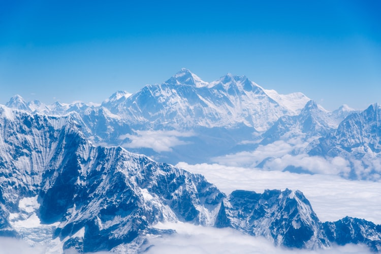
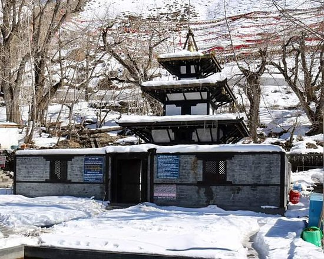

エベレスト

エベレストはインド測量局（Survey of India）で長官を務めたジョージ・
エベレストにちなんで命名された。
1920年代から長きにわたる挑戦の末、
1953年にイギリス探検隊のメンバーでニュージーランド出身の登山家であるエドモンド・
ヒラリーとネパール出身のシェルパであるテンジン・ノルゲイによって初登頂がなされた。
エベレストの標高については諸説あり、1954年にインド測量局が周辺12か所で測定し、
その結果を平均して得られた8,848メートルという数値が長年一般に認められてきた。
1999年、 全米地理学協会はGPSによる測定値が8,850メートルだったと発表した[1]。
厳密には地殻変動などの影響によって標高は年々変動していると考えられている。
エベレストの南麓に位置するネパールのサガルマータ国立公園はユネスコの世界遺産に登録されている。
Everest
チトワン国立公園
チトワン国立公園
ネパール中央のタライ平原にある国立公園で東西80km、
南北23kmの広大な国立公園。
1961年にはサイ保護区に、1973年には国立公園に指定され、
1984年にはユネスコの世界自然遺産にも指定されました。
インドサイを見るエレファント・サファリで人気がありますが、
野鳥の数でも知られ世界中のバードウォッチャーがやってきます。
ルンビニーブダ生まれた所（Birthplace of Buddha)
ルンビニは空港がある町バイラワから西に22ｋｍ、
カトマンズからツーリストバスで約10時間西に走ったところに位置します。
また、インドのゴラクプールから陸路で国境を越えて訪れることもできます。
ネパールビザは国境の町ソウラハで取得可能です。インドから訪問する巡礼者、
観光客が多いため、インドルピーをそのまま使うことが出来ます。
今はただの小さな村ですが、４大聖地のひとつとして、日本人はもとより多くの仏教徒が巡礼、
参拝に訪れています。
そのため、日本食のサービスもある快適なホテルからゲストハウスまで宿泊施設のランクも多岐に渡ります。
Lumbini, Nepal
- Birthplace of Buddha(ブダ生まれた所)
ポカラ
カトマンズより西へ200ｋｍのところに、ポカラはあります。
「ポカラ」という地名はネパール語の「ポカリ」（湖）という言葉から来ており、
その名の通りアンナプルナ氷河を水源とするフェワ湖、ベグナス湖、ルパ湖の美しい湖沼群を持つ町です。
標高は海抜827ｍとカトマンズに比べると低いため、気候もカトマンズより温暖です。
この標高の低い町のすぐ近くに8,000ｍ級の山々がそびえているため、世界でもまれな景観を誇っています。
マチャプチャレ（6,993m）はフェワ湖からわずか28kmで、その間には他の山はありません。
低地にいながら目の前に迫るヒマラヤの山々を見ることが出来るのは、この町ならではの贅沢。
トレッキングに出かける人々の拠点の町としてだけでなく、
湖のほとりでヒマラヤの山々を眺め、リラックスできるリゾート地としても人気のある場所です。
ムクティナートお寺(muktinath temple)

英語から翻訳-ムクティナートは、ヒンズー教徒と仏教徒の両方にとって神聖なヴィシュヌ寺院です。
ネパールのムスタングにあるソロンラmountainのMにあるムクティナートバレーにあります。
それは世界で最も高い寺院の一つです。
この場所は、ラニパウアの村の近くにあります。
ラニパウアは、誤ってムクティナートと呼ばれることもあります
ムクティナートお寺(muktinath temple)
PAGE TOP